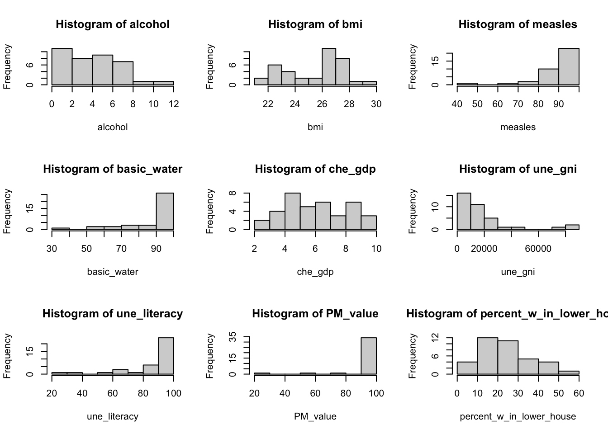

Linear Regression Model
library(tidyverse)
library(dplyr)
library(car)
library(modelr)
library(mgcv)
library(patchwork)Introduction
After our EDA and statistical analysis, we consider to generate a linear regression to better express the relationship between Life Expectancy and other variables. In particular, we set une_life as our response variable and we only look at the year of 2015.
Dataset Preparation
In the beginnig, to prepare our dataset for multiple linear regression, we delete mortality related variables, delete une_pop, which is not a good predictor of life expenctancy, and also delete variables that have high correlation values presented in EDA section. Specifically, we use “measles” to be the representative of vaccination variables–hepatitis, measles, polio, and diphtheria. Moreover, we use “bmi” to be another representative of age5_19thinness, age5_19obesity, and bmi.
In the end, we limit the data to year 2015.
data <-
read_csv("data/Merged_expectation.csv") %>%
filter(year == 2015) %>%
select(alcohol:percent_w_in_lower_house) %>%
select(-hepatitis, -polio, -diphtheria, -age5_19thinness, -age5_19obesity, -une_infant, -une_pop) %>%
mutate(income_group = as.factor(income_group),
income_group = relevel(income_group, ref = "Low income"))Model 1
First, we look at the number of missing data we have on each column, at year 2015. The table below shows variables that have less than 5% NA’s.
NA_table_1 <- data %>%
is.na() %>%
colSums()
NA_table_1[NA_table_1 <= 10] %>%
knitr::kable(col.names = c("Counts of NA"))| Counts of NA | |
|---|---|
| alcohol | 1 |
| bmi | 2 |
| measles | 0 |
| basic_water | 0 |
| gghe_d | 6 |
| che_gdp | 7 |
| une_life | 0 |
| une_gni | 7 |
| PM_value | 0 |
| income_group | 1 |
| Developed / Developing Countries | 0 |
| percent_w_in_lower_house | 5 |
Limited to the variables that we have less than 5% NA’s (which is less than 10 NAs), also exclude variables that have high correlation value, we could generate our first basic linear model, with selected variables of alcohol, bmi, measles, basic_water, che_gdp (health expenditure per gdp, gghe_d is deleted since it represents similar aspects), une_gni, PM_value, income_group (Developed/Developing Countries is deleted since it is similar to income_group), percent_w_in_lower_house, and our response variable of une_life.
- Model 1: une_life ~ alcohol + bmi + measles + basic_water + che_gdp + une_gni + PM_value + income_group * percent_w_in_lower_house
The following table shows the distribution of all numerical variables here.
colname <- c("alcohol", "bmi", "measles", "basic_water", "che_gdp", "une_gni", "PM_value", "percent_w_in_lower_house")
par(mfrow=c(2, 4))
data_1_a <- data.frame(data)
for (i in 1:8) {
variable <- data_1_a[colname[i]][ ,1]
hist(variable, main = paste("Histogram of", colname[i], sep = " "), xlab = colname[i])
}
Delete all the NA rows in the data, consider intersection between income_group and percent_w_in_lower_house, using step function with backwards direction. Then we generate our first model.
# delete all the Na columns
data_1 <- data %>%
select(une_life, alcohol, bmi, measles, basic_water, che_gdp, une_gni, PM_value, income_group, percent_w_in_lower_house) %>%
drop_na()# fit the model one
m <- lm(une_life ~ alcohol + bmi + measles + basic_water + che_gdp + une_gni + PM_value + income_group * percent_w_in_lower_house, data = data_1)
# use stepwise function
m1 <- step(m, direction = "backward", trace = FALSE)# create table for regression output
m1 %>%
summary() %>%
broom::tidy() %>%
select(term, estimate, p.value) %>%
knitr::kable(
caption = "Estimate and P-value of Model 1 for Year 2015 Life Expectancy (Income Reference Group is Low Income)",
col.names = c("Predictor", "Estimate", "P-value"),
digits = 3
)| Predictor | Estimate | P-value |
|---|---|---|
| (Intercept) | 37.297 | 0.000 |
| alcohol | -0.164 | 0.102 |
| measles | 0.066 | 0.035 |
| basic_water | 0.271 | 0.000 |
| income_groupHigh income | 6.368 | 0.009 |
| income_groupLower middle income | 3.437 | 0.068 |
| income_groupUpper middle income | 4.358 | 0.065 |
| percent_w_in_lower_house | 0.156 | 0.012 |
| income_groupHigh income:percent_w_in_lower_house | -0.003 | 0.973 |
| income_groupLower middle income:percent_w_in_lower_house | -0.151 | 0.041 |
| income_groupUpper middle income:percent_w_in_lower_house | -0.152 | 0.054 |
From the above, variables like bmi, che_gdp, une_gni, PM_value are deleted according to backwards step function. One way to explain this is that these variables have high correlation with income_group–in higher income countries(une_gni), people have more access to healthy foods and healthy life styles (bmi), governments also spend more money on public health(che_gdp), as well as on building a clean environment(PM_value).
Another thing that needs to be aware of is that the intersection of income group and women in parliament(percent_w_in_lower_house). The variable percent_w_in_lower_house is significant itself, but it is more significant in middle income and upper income groups. In other words, after a country reaches a certain level of income, increasing women’s voice in the country actually helps people live longer, which follows the intention that we chose to include this variable in the first place. (Since 0.156 - 0.152 > 0, keeping other variables constant, percent_w_in_lower_house increases, the predicted life expectancy will increase.)
The model 1’s R-adjusted score reaches 0.7808107.
Below are the analysis plots of the model. These plot shows that the residuals are normally distributed, independent, but may not have a constant variance–it has a linear trend in the end according to the third plot. In second plot, the points follows the line, so the regression function is linear. Therefore, maybe we don’t need to add transformation to our response variable.
par(mfrow=c(2,2))
plot(m1)
- The final Model 1 is une_life ~ alcohol + measles + basic_water + income_group * percent_w_in_lower_house
Model 2
Second, we only look at the countries with existing une_literacy data and found out the number of NA in other variables of these countries, at year 2015. The table below shows variables that have less than 5% NA’s.
NA_table_2 <- data %>%
filter(is.na(une_literacy) == FALSE) %>%
is.na() %>%
colSums()
NA_table_2[NA_table_2 <= 3] %>%
knitr::kable(col.names = c("Counts of NA"))| Counts of NA | |
|---|---|
| alcohol | 0 |
| bmi | 0 |
| measles | 0 |
| basic_water | 0 |
| gghe_d | 0 |
| che_gdp | 0 |
| une_life | 0 |
| une_gni | 1 |
| une_literacy | 0 |
| PM_value | 0 |
| income_group | 1 |
| Developed / Developing Countries | 0 |
| percent_w_in_lower_house | 2 |
Here, limited to the variable that we have less than 5% NA’s (which is less than 3 NAs), also exclude variables that have high correlation value, we could generate our second basic linear model, with selected variables of alcohol, bmi, measles, basic_water, che_gdp, une_gni, une_literacy, PM_value, income_group, percent_w_in_lower_house, and our response variable of une_life.
- Model 2: une_life ~ alcohol + bmi + measles + basic_water + che_gdp + une_gni + une_literacy + PM_value + income_group + percent_w_in_lower_house + income_group * percent_w_in_lower_house
(Also consider intersection here)
The following table shows the distribution of all numerical variables here.
# delete all the Na columns, and limit to countries with existing une_literacy data
data_2 <- data %>%
filter(is.na(une_literacy) == FALSE) %>%
select(une_life, alcohol, bmi, measles, basic_water, che_gdp, une_gni, une_literacy, PM_value, income_group, percent_w_in_lower_house) %>%
drop_na()colname <- c("alcohol", "bmi", "measles", "basic_water", "che_gdp", "une_gni", "une_literacy", "PM_value", "percent_w_in_lower_house")
par(mfrow=c(3, 3))
data_2_a <- data.frame(data_2)
for (i in 1:9) {
variable <- data_2_a[colname[i]][ ,1]
hist(variable, main = paste("Histogram of", colname[i], sep = " "), xlab = colname[i])
}
Delete all the NA rows in the data, consider intersection between income_group and percent_w_in_lower_house, using step function with backwards direction. Then we generate our second model.
# fit the model two
m <- lm(une_life ~ alcohol + bmi + measles + basic_water + che_gdp + une_gni + une_literacy + PM_value + income_group * percent_w_in_lower_house, data = data_2)
# use stepwise function
m2 <- step(m, direction = "backward", trace = FALSE)# create table for regression output
m2 %>%
summary() %>%
broom::tidy() %>%
select(term, estimate, p.value) %>%
knitr::kable(
caption = "Estimate and P-value of Model 2 for Year 2015 Life Expectancy Only in Countries With Existing Literacy Data",
col.names = c("Predictor", "Estimate", "P-value"),
digits = 3
)| Predictor | Estimate | P-value |
|---|---|---|
| (Intercept) | 48.798 | 0.000 |
| bmi | -0.521 | 0.126 |
| measles | 0.102 | 0.100 |
| basic_water | 0.185 | 0.002 |
| che_gdp | 0.464 | 0.088 |
| income_groupHigh income | 13.186 | 0.000 |
| income_groupLower middle income | 6.742 | 0.005 |
| income_groupUpper middle income | 8.695 | 0.002 |
From the above, variables like alcohol, une_gni, une_literacy, PM_value, income_group:percent_w_in_lower_houseare, percent_w_in_lower_houseare are deleted according to backwards step function. It is very different from the model 1 when we limit to 37 countries. Moreover, even though we specifically make sure every country has literacy data, literacy is not significant enough to be included in the linear regression model.
The intersection of income group and women in parliament(percent_w_in_lower_house) is also been deleted. Therefore, we can conclude that the model we generate in a small range of countries with complete literacy data entries is very different from the model generated from a larger dataset, while literacy data is not significant in the small range of countries. To conclude, we should discard literacy variable, and also discard model 2.
The model 2’s R-adjusted score reaches 0.857607. This is reasonable, since we generate model 2 in a small range of countries.
- Therefore, we should discard literacy variable, and also discard model 2. We should consider Model 1 as a great subset of the full model.
Compare Model 1 with Full Model
Full Model is the Year 2015 full dataset except mortality rate and except variables with more than 5% NAs.
- Full Model: uni_life ~ hepatitis + polio + diphtheria + age5_19thinness + age5_19obesity + une_pop + alcohol + bmi + measles + basic_water + gghe_d + che_gdp + une_pop + une_gni + PM_value + income_group + percent_w_in_lower_house + Developed/Developing Countries
# generate the Year 2015 full dataset except mortality rate
data_full <-
read_csv("data/Merged_expectation.csv") %>%
filter(year == 2015) %>%
select(une_life, hepatitis, polio, diphtheria, age5_19thinness, age5_19obesity, une_pop , alcohol, bmi, measles, basic_water, gghe_d, che_gdp, une_pop, une_gni, PM_value, income_group, percent_w_in_lower_house, `Developed / Developing Countries`) %>%
drop_na()
m_full <- lm(une_life ~ ., data = data_full)m1 %>%
summary() %>%
broom::glance() %>%
bind_rows(summary(m_full) %>% broom::glance()) %>%
mutate(model = c("Model 1", "Full Model")) %>%
select(model, everything()) %>%
knitr::kable(
caption = "Comparision of Model 1 and Full Model",
digits = 3
)| model | r.squared | adj.r.squared | sigma | statistic | p.value | df | df.residual | nobs |
|---|---|---|---|---|---|---|---|---|
| Model 1 | 0.794 | 0.781 | 3.693 | 59.777 | 0 | 10 | 155 | 166 |
| Full Model | 0.817 | 0.791 | 3.541 | 31.710 | 0 | 19 | 135 | 155 |
From the above table, Model 1 and Full Model do not have big difference on adjusted R^2, but Model 1 has less predictors, which is much better.
Transformation on Response Variable of Model 1
First, we want to find whether response variable une_life needs transformation.
inverseResponsePlot(m1, key = TRUE)## lambda RSS
## 1 2.17794 1637.306
## 2 -1.00000 1953.745
## 3 0.00000 1782.892
## 4 1.00000 1678.616From the above plot, the best \(\lambda\) for model 1 is 2.17794, which is different from 1. Therefore, we will apply \(\lambda\) equal to 2.17794 to une_life.
# Fit model 1 with une_life^2.17794
m1_tr <- lm((une_life)^2.17794 ~ alcohol + measles + basic_water + income_group * percent_w_in_lower_house, data = data_1)
# create table for regression output
m1_tr %>%
summary() %>%
broom::tidy() %>%
select(term, estimate, p.value) %>%
knitr::kable(
caption = "Estimate and P-value of Transformed Model 1 for Year 2015 Life Expectancy",
col.names = c("Predictor", "Estimate", "P-value"),
digits = 3
)| Predictor | Estimate | P-value |
|---|---|---|
| (Intercept) | 695.168 | 0.403 |
| alcohol | -52.404 | 0.099 |
| measles | 19.506 | 0.047 |
| basic_water | 82.789 | 0.000 |
| income_groupHigh income | 1960.037 | 0.011 |
| income_groupLower middle income | 942.528 | 0.112 |
| income_groupUpper middle income | 1248.515 | 0.093 |
| percent_w_in_lower_house | 43.753 | 0.025 |
| income_groupHigh income:percent_w_in_lower_house | 12.999 | 0.603 |
| income_groupLower middle income:percent_w_in_lower_house | -42.804 | 0.065 |
| income_groupUpper middle income:percent_w_in_lower_house | -41.973 | 0.091 |
The transformed model 1’s R-adjusted score reaches 0.7886281. The adjusted R square increases ~0.01 after transformation, which is close to the adjusted R square of the full model. However, while the difference of adjusted R square is small, for better interpretation, we decide to choose the original Model 1.
Finally, our linear regression model on life expectancy is une_life ~ alcohol + measles + basic_water + income_group * percent_w_in_lower_house.